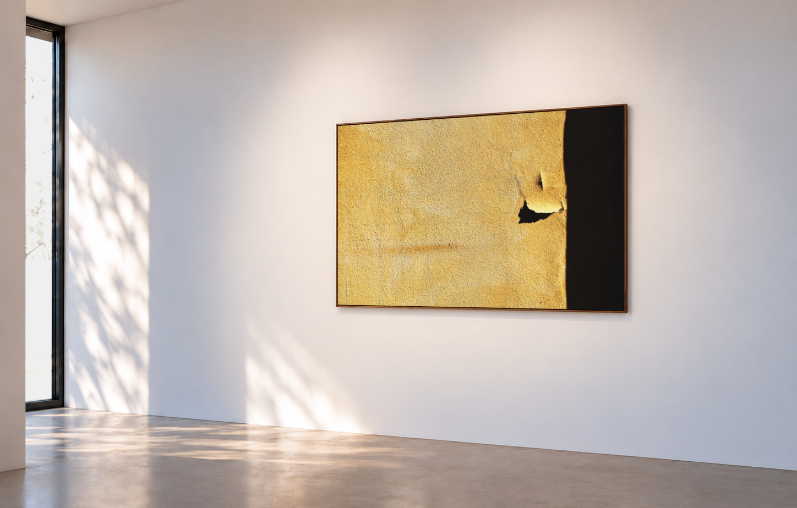
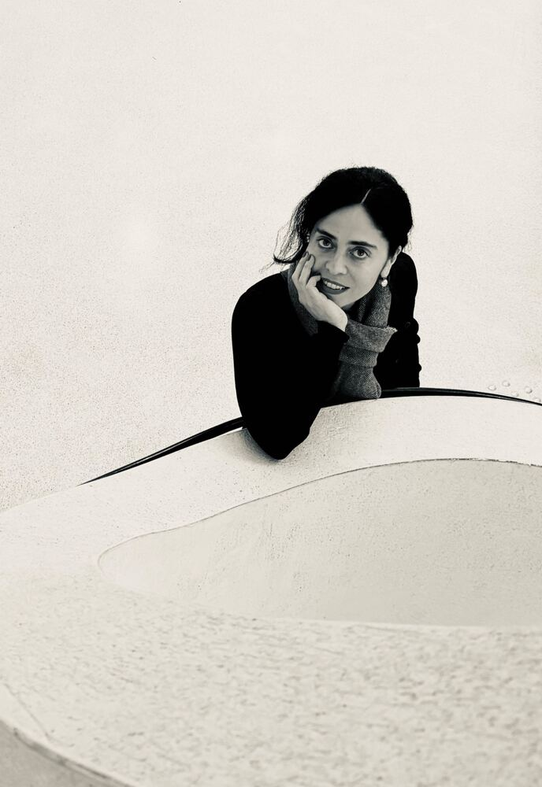

ABOUT
Sara Luccarelli
Sara Luccarelli is a contemporary photographer who lives and works in Strasbourg. Her work explores minimalist, architectural and poetic forms. Her visual language is defined by clean lines, geometric compositions and a fascination with subtle details.
Her photographs often focus on architecture and urban environments, reducing spaces to their essential forms. Through carefully considered perspectives, framing and depth, she transforms ordinary structures into graphic compositions.
Colour and shape play an important role in her work. Strong contrasts, monochromatic surfaces and vivid blocks of colour create images that often feel more abstract and painterly than documentary.
Rather than telling literal stories, Sara is interested in fragments, textures, reflections, shadows and unexpected details. These isolated elements invite the viewer to look again and to experience a place through atmosphere, rhythm and visual sensation.
WORK
CONTACT